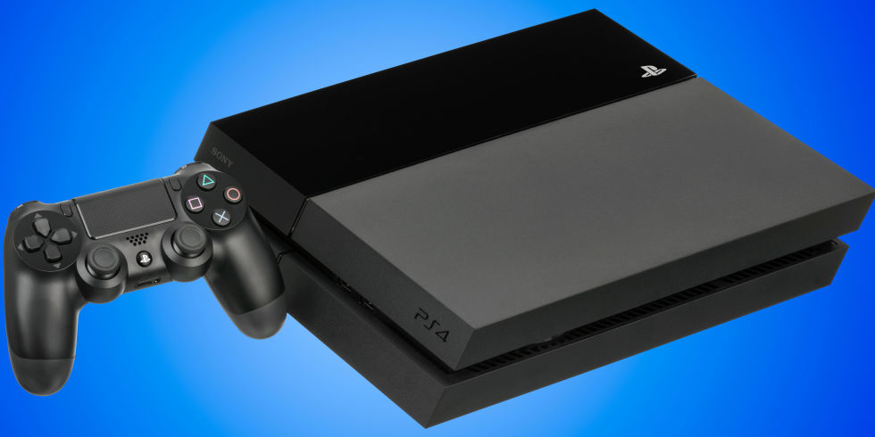
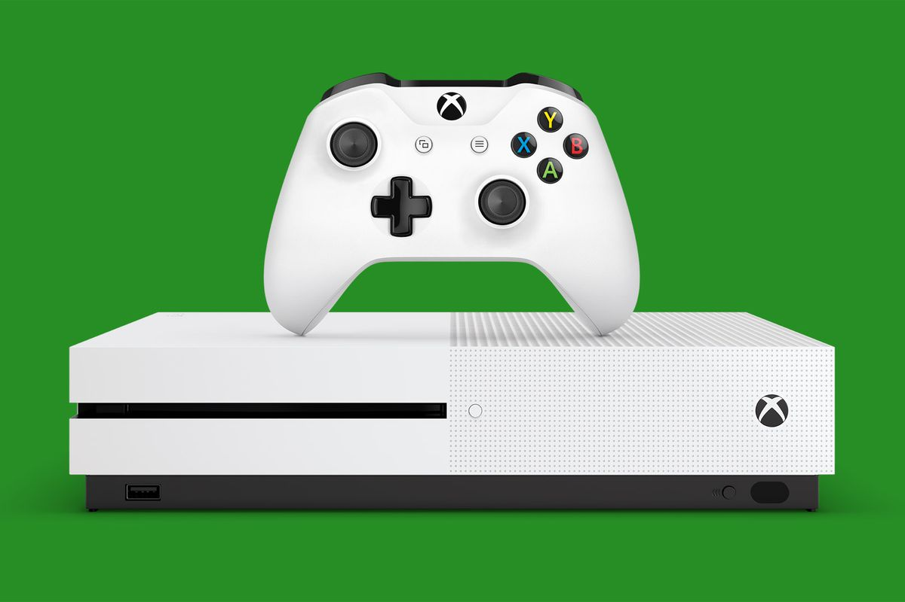

New Systems
There are alot of systems to play videogames on but there are four main console there is the playstation line of systems but the most recent one os the ps4.
There is the xbox one and the nintendo switch witch is like a small tablet with detachable controllers it is also portable. The downside to the switch is that its max a 720p and 30-50fps and consoles
(ps4,xbox1) are not portable but they reach 1080p and 4k with 60fps. And on the other hand computers with a desktop you can range from 60fps and 1080p to 4k and 300fps that's why people like computers
they have multipurpose and they make games look better in graphics.

